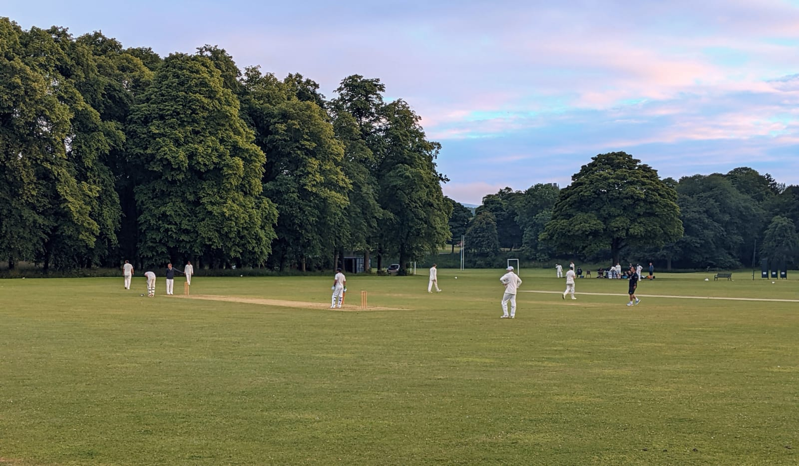

I played a lot of cricket growing up in God’s own county, Yorkshire, both for school and for my club, and I loved it. So many aspects of junior cricket evoke happy memories. Whether that was simply because I was enjoying the summer months with my mates, or whether it was a deeper rooted fondness for the sport, I honestly do not know. That enjoyment continued when, at around the age of 16, I began to play men’s cricket regularly for Heworth CC in York. I was still sharing a changing room with close friends, I was now challenging myself at a different level, and I also took great pleasure in frustrating opposition players who were at least twice my age.

Gradually however, I drifted away from cricket. A combination of A-level pressure, then moving to university, and no longer being in the same club side as my close friends, meant that cricket increasingly felt like a chore. Without that camaraderie, it became a lonely place – I never felt that I was contributing when I did play, and so I stopped altogether.
I continued to avidly watch the game – the summer of 2019, as it was for any cricket fan, was special. Both the World Cup final and the final day of the Ashes Test of Headingley and, more importantly, the emotions that they aroused will stay with me for as long as I live.
And yet, it was not those games which made me realise that I wanted to pick up bat and ball again. That revelation came in the early hours of the morning in the middle of winter, in the midst of another lockdown, as I watched Joe Root score masterful hundred after masterful hundred, first in Sri Lanka, and then in India. As those cold early mornings continued, even when the England wins turned to crushing defeats, I found myself pining for summer and the chance to play again.
When you spend time away from cricket, you gradually forget the specifics of the game that make it so intoxicating. More than perhaps any other sport, cricket is overwhelmingly sensory – the charming, scenic setting; the smell of freshly cut grass and linseed oil, and the unmistakeable sound of leather on willow, cracking off the middle of the bat.
When I returned to that environment this summer, ready to embark on my first full cricket season in four years, it was a wonderfully intense feeling, as I got to experience those sights, smells and sounds once more. Regardless of the standard of cricket, one thing that remains constant around the world is that the game is played in remarkable settings. Scotland is no different. It is true that absence makes the heart grow fonder – with every shot that found the boundary, every catch I took, and every beautiful ground that I played at, I fell back in love with the game all over again.
Cricket in Scotland is different to what I grew up with in Yorkshire – it’s less entrenched in the culture, and yet for those who do play, it means just as much. I have played both with and against international cricketers this summer, and played with a greater mix of backgrounds than I ever have. As well as English and Scottish members, my team has also has Indian, Pakistani, Sri Lankan, and South African members. That diversity is fantastic; it reflects the very best of what society can be when people from all races and backgrounds come together. The equality of opportunity is far from perfect, but the desire to improve that is evident; the current setup shows that with further funding and increased opportunities, Scottish cricket can only continue to progress.
In my short time playing cricket in Scotland, I have not only rediscovered my love for the sport, but also seen the amount of remarkable stories that there are – the different groups of society that are brought together by cricket, and also the individual efforts that enrich the game. Through this website, I hope to not only share some of these stories, but also contextualise why I have grown so fond of cricket in Scotland.